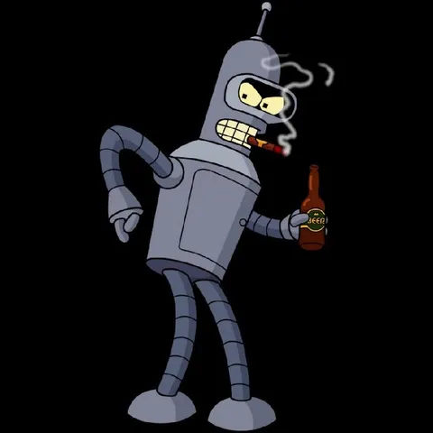

Всем привет! Нам повезло жить в эпоху, когда человеческий труд принято облегчать и замещать технологиями. Повсюду ИИ, асситсенты, агенты. Но не ИИ единым - кроме digital-процессов есть еще физический мир, производственные процессы, товародвижение. По-прежнему люди производят товары, возят их, собирают, грузят, доставляют. Первые способы оптимизировать это начались больше ста лет назад, но они не прекращаются и сейчас, только технологии уже на другом уровне. Вселенные автоматизации производственных операций и ИИ сейчас могут успешно сочетаться и менять физический мир. Кстати, в Яндекс Лавке для этого есть много своих операций и объектов - свой завод, распределительные центры, грузовая логистика, дарксторы, логистика последней мили - и везде есть простор для роботизации.
Мы ищем в Яндекс Лавку руководителя технических проектов в области роботизации (а также автоматизации и оптимизации) наших операционных процессов. Основная задача - сокращать объем ручного труда и минимизировать количество касаний товаров руками людей.
У нас много доменов и сегментов товародвижения, на которые можно влиять. В некоторых из них уже есть примеры роботизации и hardware-оптимизации, а где-то можно творить с нуля. У нас большие ставки на повышение эффективности работы дарксторов и распределительных центров. Есть амбиция масштабирования роботов-доставщиков на порядки. Есть развесистая физическая ИТ-инфраструктура объектов, которую хочется сделать еще умнее.
Тепловизоры, спектральные камеры и умные датчики? А может быть, экзоскелеты, коптеры и роботы-гуманоиды? Это вы нам расскажите, как нам изменить этот мир! Нужно искать новые game-changing подходы к оптимизации полевых операций за счет любых новых технологий, и достигать результатов по этим проектам.
Мы ищем человека, который за счет насмотренности, опыта и экспертизы мог бы находить новые точки оптимизации, автоматизации и роботизации во всех операционных процессах Лавки - от завода и РЦ до дарксторов, кухонь и логистики, преимущественно за счет внедрения разного рода механизмов, роботов, девайсов, вплоть до IoT.
Если вы
- имеете сильный технологический бекграунд в робототехнике или hardware-оптимизациях;
- умеете вести проекты, запускать все, что летит, и добиваться результата;
- можете матрично руководить командами и задействовать нужные ресурсы для достижения целей;
- готовы работать со стейкхолдерами от бизнеса, подрядчиками, смежниками, поставщиками, закупками;
- знаете, как доводить проекты от пилота до масштабных запусков, ориентируясь на метрики;
- представляете, что творится на рынке робототехники, механизмов и умных устройств;
- хотите менять физический мир екома и ритейла и делать бизнес эффективней -
пишите https://t.me/jkennedy или jkennedy@yandex-team.ru
